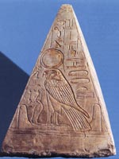

Апоп, в єгипетській міфології велетенський змій, що втілює морок і зло, одвічний ворог бога сонця Ра. Апоп жив в глибині землі, де і відбувалася його боротьба з Ра. Щоночі Апоп підстерігав Ра, що пливе в сонячній турі по підземному Нілу, і випивав з річки всю воду. У щоночі бої з Апопом Ра завжди виходив переможцем і змушував чудовисько вивергнути воду назад. В іншому міфі Ра в образі рудого кота відрізав голову змію Апопу під священним сімокором, древом життя, міста Геліополя. Апоп вважався витвором Нейт, він з'явився з первозданних вод до Великої Еннеад. Існувала і версія про АПОП як про старшого бога-творця Всесвіту. До кінця Середнього царства, після завоювання Єгипту гиксосами, і в пізній період розвитку єгипетських культів змія Апопа зближували з демонічним богом Сетом.
У пізній єгипетської міфології царі Єгипту Птолемеї придумали своєрідну унію єгипетської і грецької релігії, давши Осирису грецький вигляд, під ім'ям Сераписа, і намагаючись зіставляти свої божества з єгипетськими. Так, наприклад, проводилося ототожнення богів і інших міфічних істот обох релігій: Амона з Зевсом, Апопа з Тифоном, Тота з Гермесом, Осіріса з Діонісом, Хатор з Афродітою, Гора з Аполлоном, Нейт з Афіною. Таким чином, про прагнення до очищення єгипетської релігії не могло бути й мови. Навпаки, вона все менше і менше починала задовольняти народ. По-перше, вона була позбавлена ??будь-якого витонченості і височини. Єгиптяни не тільки не були чужі семітського фетишизму, але розвинули в своїх міфах інший рід фетишизму - культ тварин-символів і втілень божеств. Наприклад, бик, символ чоловічої сили, під ім'ям Апіса, вважався втіленням Птаха-Сокар-Осіріса в Мемфісі, Мневіс - в Іліополі і т.д .; баран з тієї ж причини був присвячений Амону і Хнума; ібіс, який віщував своїм прильотом повінь, - богу заходи і числа Тоту; фантастична тварина пустелі - Сету; могутній кобчик - переможцю його, Гору; крокодил - богу спеки Себеку; шакал і гієна, блукаючі по кладовищах, - підземному богу Анубісу, і т.д. Жіночим божествам присвячувалися корови (Исиде, Хатхор) або тварини котячої породи (Баст, Пахт), як символи родючості. Ці тварини містилися при храмах з великою пошаною, звіщали оракули, користувалися культом і після смерті отримували урочисте поховання.